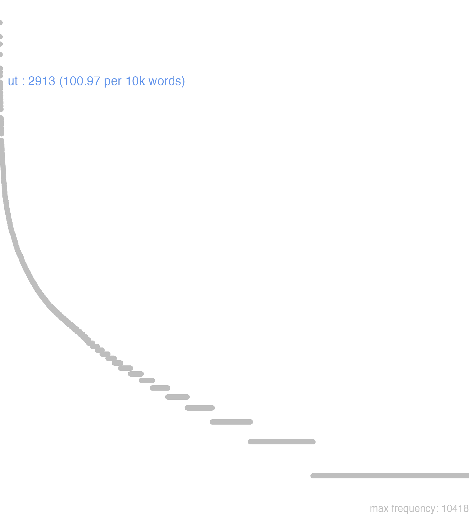

200 ut
200.0.0.1 bases lexicais
id: http://lila-erc.eu/data/id/lemma/130906
classe: conjunção subordinativa
paradigma: indeclinável
outras grafias: utei, uti
variantes do lema:
no data
ŭt
ŭtī
no data
200.0.0.2 dicionários tradicionais
ut
uti
adv. e conj. II. Conj. subordinativa:
uti
adv. e conj. II. Conj. subordinativa:
1 Que integrante:
2 Que correlativa, ou consecutiva, construindo-se geralmente em correlação com um pronome ou advérbio da oração principal: is, talis, tantus, adeo, ita, sic, tam, tantum:
3 Para que, a fim de que final:
4 Quando, desde quando temporal:
5 Como comparativa:
6 Ainda que, embora concessiva:
7 Porque, como causal:
[EXEMPLOS]
1
volo ut facias Plaut. Bac. 988a “quero que faças”; huic mandat ut ad se quam primum revertatur Cés. B. Gal. 4, 21, 2 ‘recomenda a este que volte o mais depressa possível’; Cíc. At. 13, 45, 1; Cíc. Nat. 2, 41; T. Lív. 2, 43, 11.
2
ea celeritate atque eo impetu milites ierunt…. ut hostes impetum legionum atque equitum sustinere non possent Cés. B. Gal. 5, 18, 5 ‘Os soldados avançaram com tal rapidez e com tal impetuosidade… que os inimigos não puderam sustentar o embate das legiões e da cavalaria’; idque natura loci sic muniebatur ut magna ad ducendum bellum daret facultatem Cés. B. Gal. 1, 38, 4 “e a referida cidade era de tal maneira defendida pela natureza do terreno que havia uma grande possibilidade de prolongar a guerra”; Cés. B. Gal. 1, 39, 1; Cíc. Arch. 17.
3
Dumnorigi custodes ponit ut, quae agat, quibuscum loquatur, scire possit Cés. B. Gal. 1, 20, 6 “César põe guardas para vigiar a Dunorige, para que possa saber o que ele faz e com quem fala”; Cíc. Verr. 4, 32.
4
ut illos de republica libros edidisti Cíc. Br. 19 ‘desde quando publicaste aqueles levros sobre a república’.
5
perge ut instituisti Cíc. De Or. 2, 124 “continua como começaste”.
6
ut desint vires, tamen est laudanda voluntas Ov. P. 3, 4, 79 “embora faltem as forças, entretanto deve ser louvada a vontade. i. e., o espírito de determinação”.
7
ego, ut contendere durum cum victore, sequor Hor. Sát. 1, 9, 42 “quanto a mim, como é difícil lutar com o vencedor, sigo”.
1 utī
v. ut. 2 utĭquĕ
= et uti e et ut.
no data
Ut
Conj.
conj.
Conj.
1 que, para que, para que naõ.
2 com tanto que.
3 como se.
conj.
2 Cic. para que.
Ut
Conjunct.
Conjunct.
1 que, ou paraque, aindaque
2 depois dos verbos de temer, ou recear, significa que naõ
[EXEMPLOS]
X
ut ne para que naõ
1 para que
Vt
coniunctio.
coniunctio.
1 pera que
200.0.0.3 dados de corpus
![This chart plots collocate by scoreSUBST, for the headword ut here are all the values plotted: collocate: sum; scoreSUBST: 0. collocate: is; scoreSUBST: 0. collocate: facio; scoreSUBST: 0. collocate: non; scoreSUBST: 0. collocate: ego; scoreSUBST: 0. collocate: scribo; scoreSUBST: 0. collocate: ita; scoreSUBST: 0. collocate: tu; scoreSUBST: 0. collocate: omnis; scoreSUBST: 0. collocate: scio; scoreSUBST: 0. collocate: dico; scoreSUBST: 0. collocate: curo; scoreSUBST: 0. collocate: uideo; scoreSUBST: 0. collocate: nam; scoreSUBST: 0. collocate: ago; scoreSUBST: 0. collocate: opinor; scoreSUBST: 0. collocate: fio; scoreSUBST: 0. collocate: aio; scoreSUBST: 0. collocate: quisque; scoreSUBST: 0. collocate: uolo; scoreSUBST: 0. collocate: ualeo; scoreSUBST: 0. collocate: spero; scoreSUBST: 0. collocate: nisi; scoreSUBST: 0. collocate: puto; scoreSUBST: 0. collocate: uos; scoreSUBST: 0. collocate: efficio; scoreSUBST: 0. collocate: soleo; scoreSUBST: 0. collocate: accido; scoreSUBST: 0. collocate: rogo; scoreSUBST: 0. collocate: primum; scoreSUBST: 0. collocate: oro; scoreSUBST: 0. collocate: hortor; scoreSUBST: 0. collocate: supra; scoreSUBST: 0. collocate: committo; scoreSUBST: 0. collocate: decerno; scoreSUBST: 0. collocate: opera; scoreSUBST: 2. collocate: adduco; scoreSUBST: 0. collocate: Quirites; scoreSUBST: 0. collocate: omitto; scoreSUBST: 0. collocate: instituo; scoreSUBST: 0. collocate: sancio; scoreSUBST: 0. collocate: perduco; scoreSUBST: 0. collocate: breuiter; scoreSUBST: 0. collocate: euenio; scoreSUBST: 0. collocate: admoneo; scoreSUBST: 0. collocate: aequalis; scoreSUBST: 0. collocate: resto; scoreSUBST: 0. collocate: reseruo; scoreSUBST: 0. collocate: exigo; scoreSUBST: 0. collocate: persuadeo; scoreSUBST: 0. collocate: mando; scoreSUBST: 0. collocate: opinio; scoreSUBST: 2. collocate: quondam; scoreSUBST: 0. collocate: saluus; scoreSUBST: 0](./Media/wordcloud__xx117-116xx__BY_collocate_scoreSUBST.webp)
![This chart plots collocate by scoreADJ, for the headword ut here are all the values plotted: collocate: sum; scoreADJ: 0. collocate: is; scoreADJ: 0. collocate: facio; scoreADJ: 0. collocate: non; scoreADJ: 0. collocate: ego; scoreADJ: 0. collocate: scribo; scoreADJ: 0. collocate: ita; scoreADJ: 0. collocate: tu; scoreADJ: 0. collocate: omnis; scoreADJ: 0. collocate: scio; scoreADJ: 0. collocate: dico; scoreADJ: 0. collocate: curo; scoreADJ: 0. collocate: uideo; scoreADJ: 0. collocate: nam; scoreADJ: 0. collocate: ago; scoreADJ: 0. collocate: opinor; scoreADJ: 0. collocate: fio; scoreADJ: 0. collocate: aio; scoreADJ: 0. collocate: quisque; scoreADJ: 0. collocate: uolo; scoreADJ: 0. collocate: ualeo; scoreADJ: 0. collocate: spero; scoreADJ: 0. collocate: nisi; scoreADJ: 0. collocate: puto; scoreADJ: 0. collocate: uos; scoreADJ: 0. collocate: efficio; scoreADJ: 0. collocate: soleo; scoreADJ: 0. collocate: accido; scoreADJ: 0. collocate: rogo; scoreADJ: 0. collocate: primum; scoreADJ: 0. collocate: oro; scoreADJ: 0. collocate: hortor; scoreADJ: 0. collocate: supra; scoreADJ: 0. collocate: committo; scoreADJ: 0. collocate: decerno; scoreADJ: 0. collocate: opera; scoreADJ: 0. collocate: adduco; scoreADJ: 0. collocate: Quirites; scoreADJ: 0. collocate: omitto; scoreADJ: 0. collocate: instituo; scoreADJ: 0. collocate: sancio; scoreADJ: 0. collocate: perduco; scoreADJ: 0. collocate: breuiter; scoreADJ: 0. collocate: euenio; scoreADJ: 0. collocate: admoneo; scoreADJ: 0. collocate: aequalis; scoreADJ: 2. collocate: resto; scoreADJ: 0. collocate: reseruo; scoreADJ: 0. collocate: exigo; scoreADJ: 0. collocate: persuadeo; scoreADJ: 0. collocate: mando; scoreADJ: 0. collocate: opinio; scoreADJ: 0. collocate: quondam; scoreADJ: 0. collocate: saluus; scoreADJ: 2](./Media/wordcloud__xx117-116xx__BY_collocate_scoreADJ.webp)
![This chart plots collocate by scoreVERBO, for the headword ut here are all the values plotted: collocate: sum; scoreVERBO: 2. collocate: is; scoreVERBO: 0. collocate: facio; scoreVERBO: 3. collocate: non; scoreVERBO: 0. collocate: ego; scoreVERBO: 0. collocate: scribo; scoreVERBO: 3. collocate: ita; scoreVERBO: 0. collocate: tu; scoreVERBO: 0. collocate: omnis; scoreVERBO: 0. collocate: scio; scoreVERBO: 3. collocate: dico; scoreVERBO: 2. collocate: curo; scoreVERBO: 4. collocate: uideo; scoreVERBO: 1. collocate: nam; scoreVERBO: 0. collocate: ago; scoreVERBO: 2. collocate: opinor; scoreVERBO: 4. collocate: fio; scoreVERBO: 2. collocate: aio; scoreVERBO: 3. collocate: quisque; scoreVERBO: 0. collocate: uolo; scoreVERBO: 1. collocate: ualeo; scoreVERBO: 3. collocate: spero; scoreVERBO: 3. collocate: nisi; scoreVERBO: 0. collocate: puto; scoreVERBO: 2. collocate: uos; scoreVERBO: 0. collocate: efficio; scoreVERBO: 2. collocate: soleo; scoreVERBO: 2. collocate: accido; scoreVERBO: 2. collocate: rogo; scoreVERBO: 2. collocate: primum; scoreVERBO: 0. collocate: oro; scoreVERBO: 2. collocate: hortor; scoreVERBO: 2. collocate: supra; scoreVERBO: 0. collocate: committo; scoreVERBO: 2. collocate: decerno; scoreVERBO: 2. collocate: opera; scoreVERBO: 0. collocate: adduco; scoreVERBO: 2. collocate: Quirites; scoreVERBO: 0. collocate: omitto; scoreVERBO: 2. collocate: instituo; scoreVERBO: 2. collocate: sancio; scoreVERBO: 2. collocate: perduco; scoreVERBO: 2. collocate: breuiter; scoreVERBO: 0. collocate: euenio; scoreVERBO: 2. collocate: admoneo; scoreVERBO: 2. collocate: aequalis; scoreVERBO: 0. collocate: resto; scoreVERBO: 2. collocate: reseruo; scoreVERBO: 2. collocate: exigo; scoreVERBO: 2. collocate: persuadeo; scoreVERBO: 2. collocate: mando; scoreVERBO: 2. collocate: opinio; scoreVERBO: 0. collocate: quondam; scoreVERBO: 0. collocate: saluus; scoreVERBO: 0](./Media/wordcloud__xx117-116xx__BY_collocate_scoreVERBO.webp)
![This chart plots collocate by scoreADV, for the headword ut here are all the values plotted: collocate: sum; scoreADV: 0. collocate: is; scoreADV: 0. collocate: facio; scoreADV: 0. collocate: non; scoreADV: 2. collocate: ego; scoreADV: 0. collocate: scribo; scoreADV: 0. collocate: ita; scoreADV: 3. collocate: tu; scoreADV: 0. collocate: omnis; scoreADV: 0. collocate: scio; scoreADV: 0. collocate: dico; scoreADV: 0. collocate: curo; scoreADV: 0. collocate: uideo; scoreADV: 0. collocate: nam; scoreADV: 2. collocate: ago; scoreADV: 0. collocate: opinor; scoreADV: 0. collocate: fio; scoreADV: 0. collocate: aio; scoreADV: 0. collocate: quisque; scoreADV: 0. collocate: uolo; scoreADV: 0. collocate: ualeo; scoreADV: 0. collocate: spero; scoreADV: 0. collocate: nisi; scoreADV: 0. collocate: puto; scoreADV: 0. collocate: uos; scoreADV: 0. collocate: efficio; scoreADV: 0. collocate: soleo; scoreADV: 0. collocate: accido; scoreADV: 0. collocate: rogo; scoreADV: 0. collocate: primum; scoreADV: 2. collocate: oro; scoreADV: 0. collocate: hortor; scoreADV: 0. collocate: supra; scoreADV: 0. collocate: committo; scoreADV: 0. collocate: decerno; scoreADV: 0. collocate: opera; scoreADV: 0. collocate: adduco; scoreADV: 0. collocate: Quirites; scoreADV: 0. collocate: omitto; scoreADV: 0. collocate: instituo; scoreADV: 0. collocate: sancio; scoreADV: 0. collocate: perduco; scoreADV: 0. collocate: breuiter; scoreADV: 2. collocate: euenio; scoreADV: 0. collocate: admoneo; scoreADV: 0. collocate: aequalis; scoreADV: 0. collocate: resto; scoreADV: 0. collocate: reseruo; scoreADV: 0. collocate: exigo; scoreADV: 0. collocate: persuadeo; scoreADV: 0. collocate: mando; scoreADV: 0. collocate: opinio; scoreADV: 0. collocate: quondam; scoreADV: 2. collocate: saluus; scoreADV: 0](./Media/wordcloud__xx117-116xx__BY_collocate_scoreADV.webp)
![This chart plots collocate by scoreFUNC, for the headword ut here are all the values plotted: collocate: sum; scoreFUNC: 0. collocate: is; scoreFUNC: 0. collocate: facio; scoreFUNC: 0. collocate: non; scoreFUNC: 0. collocate: ego; scoreFUNC: 0. collocate: scribo; scoreFUNC: 0. collocate: ita; scoreFUNC: 0. collocate: tu; scoreFUNC: 0. collocate: omnis; scoreFUNC: 0. collocate: scio; scoreFUNC: 0. collocate: dico; scoreFUNC: 0. collocate: curo; scoreFUNC: 0. collocate: uideo; scoreFUNC: 0. collocate: nam; scoreFUNC: 0. collocate: ago; scoreFUNC: 0. collocate: opinor; scoreFUNC: 0. collocate: fio; scoreFUNC: 0. collocate: aio; scoreFUNC: 0. collocate: quisque; scoreFUNC: 0. collocate: uolo; scoreFUNC: 0. collocate: ualeo; scoreFUNC: 0. collocate: spero; scoreFUNC: 0. collocate: nisi; scoreFUNC: 20. collocate: puto; scoreFUNC: 0. collocate: uos; scoreFUNC: 0. collocate: efficio; scoreFUNC: 0. collocate: soleo; scoreFUNC: 0. collocate: accido; scoreFUNC: 0. collocate: rogo; scoreFUNC: 0. collocate: primum; scoreFUNC: 0. collocate: oro; scoreFUNC: 0. collocate: hortor; scoreFUNC: 0. collocate: supra; scoreFUNC: 20. collocate: committo; scoreFUNC: 0. collocate: decerno; scoreFUNC: 0. collocate: opera; scoreFUNC: 0. collocate: adduco; scoreFUNC: 0. collocate: Quirites; scoreFUNC: 0. collocate: omitto; scoreFUNC: 0. collocate: instituo; scoreFUNC: 0. collocate: sancio; scoreFUNC: 0. collocate: perduco; scoreFUNC: 0. collocate: breuiter; scoreFUNC: 0. collocate: euenio; scoreFUNC: 0. collocate: admoneo; scoreFUNC: 0. collocate: aequalis; scoreFUNC: 0. collocate: resto; scoreFUNC: 0. collocate: reseruo; scoreFUNC: 0. collocate: exigo; scoreFUNC: 0. collocate: persuadeo; scoreFUNC: 0. collocate: mando; scoreFUNC: 0. collocate: opinio; scoreFUNC: 0. collocate: quondam; scoreFUNC: 0. collocate: saluus; scoreFUNC: 0](./Media/wordcloud__xx117-116xx__BY_collocate_scoreFUNC.webp)
![This charts plots the frequency of lemma by author_Frequencies. The Cicero subcorpus registers the highest normalized frequency, with the value of 121.98 and an absolute frequency of 1958. The Cicero subcorpus follows, with a normalized frequency of 121.98 and an absolute frequency of 1958. the subcorpus with the least normalized frequency is Vergilius with the normalized value of 27.03 and an absolute freqeuncy of 14. here are all the values: subcorpus: Caesar ; normalized frequency: 264 ; absolute frequency: 99.7054158169046. subcorpus: Cicero ; normalized frequency: 1958 ; absolute frequency: 121.975530138795. subcorpus: Horatius ; normalized frequency: 114 ; absolute frequency: 101.234348636888. subcorpus: Ovidius ; normalized frequency: 23 ; absolute frequency: 39.4646533973919. subcorpus: Phaedrus ; normalized frequency: 47 ; absolute frequency: 71.3526643388493. subcorpus: Sallustius ; normalized frequency: 54 ; absolute frequency: 50.0881179853446. subcorpus: Seneca ; normalized frequency: 365 ; absolute frequency: 68.1211623523264. subcorpus: Suetonius ; normalized frequency: 9 ; absolute frequency: 99.2282249173098. subcorpus: Tacitus ; normalized frequency: 26 ; absolute frequency: 89.2550635084106. subcorpus: Vergilius ; normalized frequency: 14 ; absolute frequency: 27.027027027027. subcorpus: Hieronymus ; normalized frequency: 39 ; absolute frequency: 87.6207593799146](./Media/barchart__xx117-116xx__lemma_BY_author_Frequencies.webp)
![This charts plots the frequency of lemma by genre_Frequencies. The Prosa.epistolográfica subcorpus registers the highest normalized frequency, with the value of 163.23 and an absolute frequency of 616. The Prosa.oratória subcorpus follows, with a normalized frequency of 101.39 and an absolute frequency of 1056. the subcorpus with the least normalized frequency is Poesia.épica with the normalized value of 27.03 and an absolute freqeuncy of 14. here are all the values: subcorpus: Prosa.histórica ; normalized frequency: 353 ; absolute frequency: 85.9319847123835. subcorpus: Prosa.filosófica ; normalized frequency: 611 ; absolute frequency: 100.657320307738. subcorpus: Prosa.oratória ; normalized frequency: 1056 ; absolute frequency: 101.389302276459. subcorpus: Prosa.epistolográfica ; normalized frequency: 616 ; absolute frequency: 163.226370598055. subcorpus: Poesia.lírica ; normalized frequency: 115 ; absolute frequency: 96.7443425590982. subcorpus: Poesia.didática ; normalized frequency: 69 ; absolute frequency: 58.5291373314106. subcorpus: Poesia.trágica ; normalized frequency: 40 ; absolute frequency: 34.7463516330785. subcorpus: Poesia.épica ; normalized frequency: 14 ; absolute frequency: 27.027027027027. subcorpus: Prosa.ficcional ; normalized frequency: 39 ; absolute frequency: 87.6207593799146](./Media/barchart__xx117-116xx__lemma_BY_genre_Frequencies.webp)
![This charts plots the frequency of lemma by period_Frequencies. The I.a.C. subcorpus registers the highest normalized frequency, with the value of 111.94 and an absolute frequency of 2405. The I.d.C. subcorpus follows, with a normalized frequency of 66.39 and an absolute frequency of 434. the subcorpus with the least normalized frequency is I.d.C. with the normalized value of 66.39 and an absolute freqeuncy of 434. here are all the values: subcorpus: I.a.C. ; normalized frequency: 2405 ; absolute frequency: 111.938561787293. subcorpus: I.d.C. ; normalized frequency: 434 ; absolute frequency: 66.3913109989292. subcorpus: II.d.C. ; normalized frequency: 35 ; absolute frequency: 91.6230366492147. subcorpus: IV.d.C. ; normalized frequency: 39 ; absolute frequency: 87.6207593799146](./Media/barchart__xx117-116xx__lemma_BY_period_Frequencies.webp)
ut scribis ita video
Cic.Att.2.15.1
Vejo, como tu me escreves. [JDD]
fac modo ut venias
Cic.Att.3.4
Esforça-te apenas para que venhas. [JDD]
primum ut opinor εὐαγγέλια
Cic.Att.2.3.1
Em primeiro lugar, uma boa notícia, em minha opinião. [JDD]
prorsus ut scribis ita sentio
Cic.Att.2.17.1
Penso exatamente como escreves. [JDD]
sane ita cadebat ut vellem
Cic.Att.3.7.1
Sem dúvida, isso seria como eu queria. [JDD]
rogat ut rem sic relinquam
Cic.Att.5.21.12
pede que eu deixe o assunto como está. [JDD]
exspectare velis cures ut sciam
Cic.Att.1.17.11
Cuides para que eu saiba quando queres que eu te espere. [JDD, de outra edição]
sed scripsi ut debui diligenter
Cic.Att.2.1.12
Mas escrevi, como devia, com todo cuidado. [JDD]
apud te est ut volumus
Cic.Att.1.8.1
Em tua casa está tudo conforme queremos. [JDD]
id agendum est ut satis uixerimus
Sen.Ep.23.10
É preciso proceder de modo que tenhamos vivido bastante. [JDD]
sed ille ut scripsi non miser
Cic.Att.4.6.2
Mas ele, como escrevi, não é infeliz. [JDD]
reliqui libri τεχνολογίαν habent ut scis
Cic.Att.4.16.3
os demais livros têm uma discussão técnica, como sabes. [JDD]
senatum frequentem celeriter ut uidistis coegi
Cic.Catil.3.7.11
Reuni rapidamente um senado numeroso, como vistes. [JDD]
rogat ut eos ad ducenta perducam
Cic.Att.5.21.12
Roga que eu os faça chegar aos duzentos. [JDD]
Dein salutati invicem Ut restiterunt :
Phaed.3.7
em seguida, eles pararam e se fizeram as saudações. [JDD]
incumbite in causam Quirites ut facitis
Cic.Phil.4.12.7
Entregai-vos à causa, quirites, como estais fazendo. [JDD]
agamus igitur pingui ut aiunt Minerua
Cic.Amici.19
Procedamos, portanto, como dizem, com uma pingue Minerva. [JDD]
de exercitu dicam breuiter ut cetera
Cic.Deiot.22
Sobre o exército vou falar sucintamente, assim como das demais coisas. [JDD]
putas ne fore ut legem non ferat
Cic.Att.4.8A.1
Achas que ele não vai propor sua lei? [JDD, de outra edição]
eo ut erat dictum ad conloquium uenerunt
Caes.Gal.1.43.2
Lá, como havia sido combinado, chegaram para a conversação. [JDD]
nunc ut opinionem habeas rerum ferendum est
Cic.Att.4.18.1
*** agora, para que tenhas uma opinião dos assuntos, é preciso aguentar. [JDD, de outra edição]
occulte sed ita ut perspicuum sit invidet
Cic.Att.1.13.4
ocultamente, mas de um modo que é perceptível, me põe olho gordo. [JDD]
ut in Arcano Quintus maneret dies fecit
Cic.Att.5.1.3
A data fez que Quinto permanecesse em sua chácara em Arcas. [JDD]
o praeclarum custodem ouium ut aiunt lupum
Cic.Phil.3.27.6
Oh! ilustre guardador de ovelhas, como dizem, o lobo! [JDD]
haec sunt ut opinor in re publica
Cic.Att.1.19.5
Isto é, a meu ver, o que há na república. [JDD]
peto abs te ut haec diligenter cures
Cic.Att.1.9.2
Peço te que cuides disso com presteza. [JDD, de outra edição]
quod ut ne accidat magis cauendum est
Cic.Amici.99
Para que isso não ocorra, deve-se precaver ainda mais. [JDD]
proinde ita fac venias ut ad sitientis auris
Cic.Att.2.14.1
Por isso, procura vir como diante de ouvidos sedentos. [JDD]
effice ut possis laudari si minus ut adgnosci
Sen.Ep.120.22
Faz com que possas ser louvado, se não, pelo menos reconhecido. [JDD]
in re familiari valde sumus ut scis perturbati
Cic.Att.4.1.8
Com relação meu patrimônio, estou, como sabes, muito perturbado. [JDD]
quo modo ut alia omittam mortem fili tulit
Cic.Amici.9
Como, para omitir outras coisas, suportou a morte do filho! [JDD, de outra edição]
statues ut ex fide fama reque mea videbitur
Cic.Att.5.8.3
resolverás o que te parecer bom conforme minha lealdade, reputação e interesse. [JDD]
cogor ut velim ita sit sed omnia metuo
Cic.Att.5.21.3
Sou obrigado; gostaria que fosse assim, mas tenho medo de tudo. [JDD]
tabellae ministrabantur ita ut nulla daretur uti rogas
Cic.Att.1.14.5
distribuíam tabuinhas de forma que não fosse dada nenhuma com o “a favor” [JDD]
posteriores enim cogitationes ut aiunt sapientiores solent esse
Cic.Phil.12.5.4
Pois os últimos pensamentos costumam ser, como dizem, os mais sábios. [JDD]
sed ut omittam communem causam ueniamus ad nostram
Cic.Lig.20
Mas para deixar a causa comum, vamos à nossa. [JDD]
qua re cura ut te quam primum videamus
Cic.Att.1.18.8
Por isso cuida para que te vejamos o quanto antes. [JDD]
non potest fieri ut non aliquando succedat multa temptanti
Sen.Ep.29.2
não pode ocorrer que não tenha êxito algumas vezes quem tenta muitas coisas.” [JDD]
hortaris etiam sponte deponam ut mea tam grauia regna
Sen.Oed.678
Até mesmo me exortas a que eu espontaneamente abandone o meu tão pesado reino? [JDD]
inpone manus super eam ut salva sit et vivat
Vulg.Marc.5.23
coloca tua mão sobre ela para que seja curada e viva. [JDD]
Graecis querentibus ut in fano deponerent postulantibus non concessi
Cic.Att.5.21.12
aos gregos que se queixavam, postulando para depositar o dinheiro no templo, eu não concedi. [JDD]
nam ut illi auderent hoc postulare Crassus eos impulit
Cic.Att.1.17.9
pois quando eles se atreveram a pedir isso, Crasso os impulsionou. [JDD]
et inimicissimus quidem Caesaris et ut omnia inquit ista rescindat
Cic.Att.2.12.2
“E na verdade inimicíssimo de César”, diz, “e pretendendo anular todos os seus atos”. [JDD]
incredibile dicam sed ita clarum ut ipsum negaturum non arbitrer
Cic.Ver.2.4.57.14
Vou dizer algo incrível, mas tão evidente que eu creio que nem ele próprio vai negar. [JDD]
decernebat enim ut ueteribus legibus tantum modo extra ordinem quaereretur
Cic.Mil.14
Pois decretava que se julgasse, por antigas leis, tão somente fora da ordem [JDD]
qua re Ianuario mense ut constituisti cura ut Romae sis
Cic.Att.1.2.2
Por isso, no início de janeiro, cuida para que estejas em Roma, conforme planejaste. [JDD, de outra edição]
non enim id agimus ut exerceatur uox sed ut exerceat
Sen.Ep.15.8
Pois não fazemos isso para que a voz seja exercitada, mas para que ela nos exercite. [JDD]
et cum Graecos tum vero diligenter Latinos ut conserves velim
Cic.Att.2.1.12
E gostaria que conservasses cuidadosamente tanto os gregos quanto os latinos. [JDD, de outra edição]
non committam posthac ut me accusare de epistularum neglegentia possis
Cic.Att.1.6.1
Não vou admitir de agora em diante que possas me acusar de negligência nas cartas. [JDD]
accedit eo quod mihi non ut quisque in Epirum proficiscitur
Cic.Att.1.13.1
Acrescente-se a isso que, se alguém vai para Epiro, não me
200.0.0.4 Diagrama de Zipf
